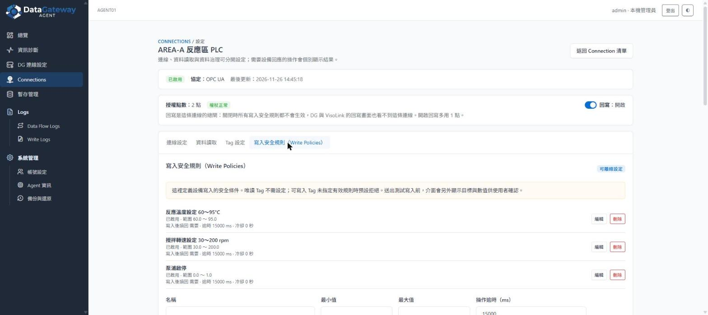

回寫與寫入安全規則
Agent 依寫入安全規則（Write Policies）檢查每一筆回寫。可寫 Tag 沒有指定有效規則時一律拒絕。
建立寫入安全規則

- 最小值／最大值
- 允許寫入的範圍。
- 操作逾時（ms）
- 等待設備回應的時間。
- Cooldown（秒）
- 同一規則兩次寫入之間的最短間隔。
- 寫入後讀回確認
- 寫入後再讀一次，確認設備值相符。
- 在規則清單下方填名稱、最小值、最大值、操作逾時、Cooldown。
- 勾選「啟用」與「寫入後讀回確認」。
- 按「新增安全規則」。
清單出現新規則，例如「已啟用 · 範圍 60.0 ～ 95.0」。
失敗時先查
- 規則必須屬於同一條連線，才能指定給該連線的 Tag。
把 Tag 設為可寫並指定規則
- 在 Tag 列按「編輯」。
- Access Mode 改成 ReadWrite，出現「Write Policy」選單後選擇規則。
- 按「儲存 OPC UA Tag」（Modbus 為「儲存進階 Tag」）。
Tag 顯示 ReadWrite；DG「回寫需求與結果」與 VisoLink 即時 View 會把這個 Tag 列為可寫。
失敗時先查
- 儲存失敗並提示「可寫 Tag 必須指定同一 Connection 中已啟用的 Write Policy」：先建立或啟用規則。
測試寫入
- 選 Tag，輸入 Value 與操作者代號，按「產生新 ID」取得 RequestID。
- 按「確認並送出」。
- 確認視窗「確認寫入？」顯示 Tag、位址、型別、值與 RequestID，核對後按「確認寫入」。
- 用「依 RequestID 查詢」查看結果。
查詢結果顯示寫入成功；有勾讀回確認時顯示讀回值。
測試寫入會真的寫到設備，請先確認現場狀態與數值安全。
失敗時先查
- 被拒絕：值超出規則範圍、還在 Cooldown，或 Tag 沒有指定規則。
確認 DG 與 VisoLink 可回寫
- 到 DG「回寫需求與結果 › 新增回寫」，確認 Tag 選單中出現這個 Tag（DG 手冊第 6 章）。
- 到 VisoLink 即時 View，確認「DG 可寫」欄顯示「可提交」（VisoLink 後台手冊）。
DG 與 VisoLink 都能對這個 Tag 送出回寫，結果記錄在 Agent「Write Logs」與 DG「需求紀錄」。
失敗時先查
- VisoLink 顯示不可提交：確認連線回寫已開啟、Tag 為 ReadWrite 並指定啟用中的規則。